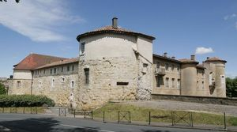
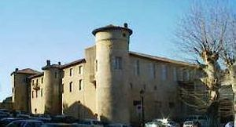
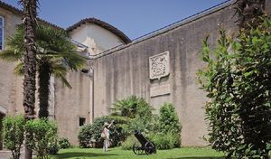
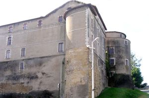
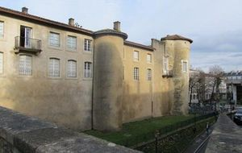
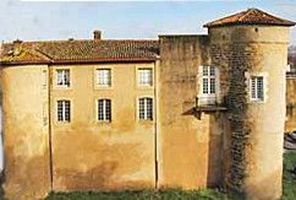
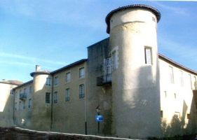
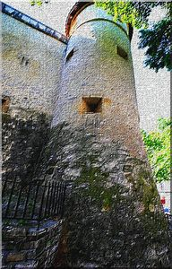
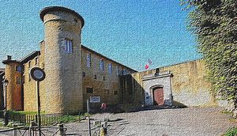

Recensement Jean-Claude Truffet
| Département | 64 — Pyrénées-Atlantiques |
| Canton | Bayonne |
| Commune | Bayonne |
| Type d'édifice | Château |
| Période d'origine | XII-XVII |









Château- VIEUX BAYONNE, en 1130, Don Alfonso le Batailleur, Roi de Navarre séjourne au château. En 1151, Bayonne est ville Anglaise (pour 3 siècles). A la fin du XIIe siècle, Richard Cur de Lion, Roi d'Angleterre, duc de Normandie, duc d'Aquitaine, comte du Maine et comte d'Anjou, accorde de nombreux privilèges à la ville de Bayonne. La cité devient prospère. Au milieu du XIVe siècle, Edward Plantagenêt, dit Édouard de Woodstock Brackembury et aussi nommé "Le Prince Noir", capitaine de guerre anglais durant la guerre de cent ans, séjourne au château. Vers 1367, Pierre Ier de Castille séjourne au château. En 1451, Bayonne est ville Française. En 1463, Louis XI séjourne au château. Au XVIe siècle, la fortification est Espagnole. En 1526, François Ier séjourne au château. En 1565, Charle IX , roi de France, séjourne au château. A partir de 1678, Vauban fortifie Bayonne, ville frontière avec l'Espagne. Il fait abattre le donjon dénommé Floripes. Voir la vue de Bayonne au XVIIe siècle. En 1660, le grand roi de France, Louis XIV, séjourne au château. En 1706, Marie Anne de Neubourg, Reine d'Espagne, séjourne au château. En 1809, le général de Palafox, défenseur de Saragosse, séjourne au château. En 1886, l'enceinte Romaine est classée aux M.H. En 1931, les remparts entre le château Vieux jusqu'à la Tour du Sault, sont inscrits aux M.H.
Le Château Vieux est la principale défense de Bayonne. Bayonne est une ville fortifiée, A la fin du XIe siècle, C'est d'abord un donjon hexagonal. Au XIIe siècle, deux corps de bâtiment sont ajoutés au donjon. Le château construit en bordure du site d'un castrum romain qui abritait la garnison et l'administration de la région nommée « Lapurdum ». À partir de la fin du XIe siècle, les vicomtes de Labourd édifient une forteresse qui s'appuie sur trois tours romaines puissamment renforcées. Elle prend le nom de château-Vieux à la fin du XVe siècle, après la construction d'un nouveau château, dit château-neuf, dans le quartier du Petit-Bayonne. Au XVIIe siècle, sur les ordres de Vauban qui entreprend de fortifier la place, le château devient le point d'appui Nord-Ouest. Le donjon est détruit, et on lui ajoute une avant-cour fortifiée. Il sera épargné par les modifications apportées plus tard au système de fortifications de Vauban. Le château-Vieux, propriété de l'Armée, est depuis toujours le siège des autorités militaires de la ville, qui accueille le 1er R.P.Ma. Plusieurs niveaux de fortifications sont visibles et datées différemment. On y trouve des fortifications romaines, médiévales et celles construites au XVIe siècle. Mais ce sera surtout Vauban qui entreprendra de grands travaux pour transformer Bayonne en véritable ville forteresse de 1638 à 1685, construction de bastions , glacis, dédoublement des remparts etc..Le déclassement de l'enceinte fortifiée de Bayonne en 1907 permet certes l'ouverture de la ville, mais au dépens du patrimoine puisqu'une partie des remparts est détruite (au nord du Château-Vieux).
Édouard de Woodstock Brackembury
"
Château Vieux de Bayonne